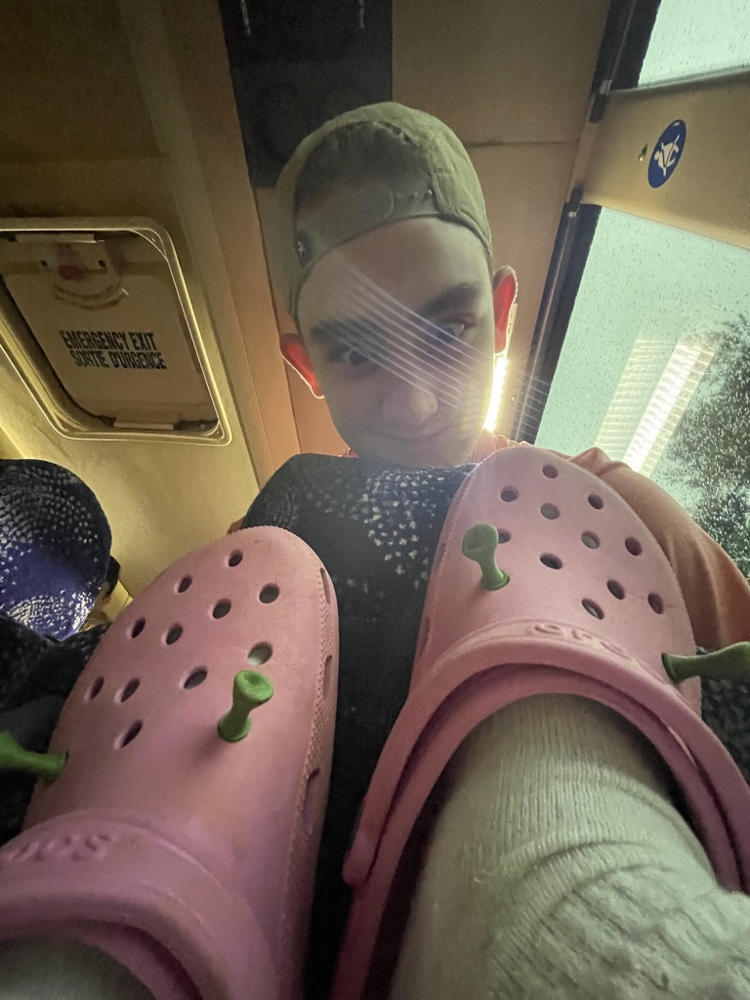
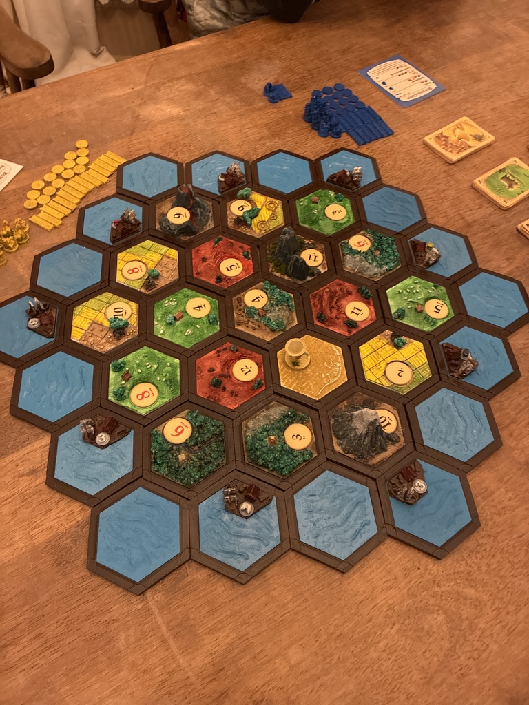
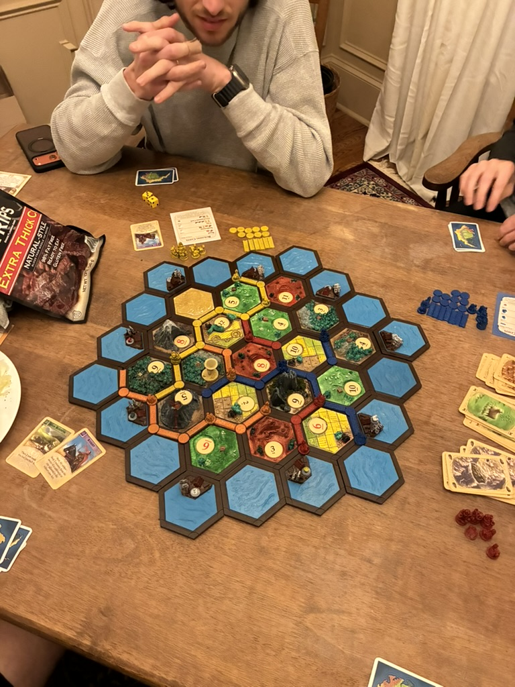

Hobby
From digital designs to physical objects — layer by layer.
I currently run a Bambu A1 — it's been a game-changer for speed and reliability. Before that, I went through an Ender 3 and an Elegoo Neptune 3, so I've seen the full range of the hobby. Next on the list: the AMS Light for multi-color printing.
I'm also solid at CAD — designing parts from scratch is half the fun.
I 3D printed a full Settlers of Catan board game set — tiles, pieces, the whole thing. I've also made functional prints like Croc Shrek ears (yes, really — and they're amazing).


